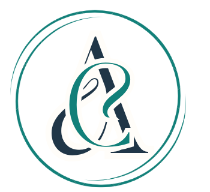

شناخت پیش از تصمیم
هیچ تصمیم مهمی نباید بر پایه حدس و هیجان گرفته شود. شناخت مسئله، داده، محیط و پیامدها نقطه شروع ماست.
↗
گروه برنامهریزی و سرمایهگذاری
گروه برنامهریزی و سرمایهگذاری ارشد
از شناخت و تحلیل تا تصمیم، سرمایهگذاری و خلق ارزش پایدار.
ارشدکو، گروه برنامهریزی و سرمایهگذاری ارشد، با یک نگاه ساده اما جدی شکل گرفته است: فرصتهای خوب زمانی به ارزش واقعی تبدیل میشوند که شناخت درست، تصمیم سنجیده و اجرای منسجم در کنار یکدیگر قرار بگیرند.
ما در نقطه اتصال برنامهریزی، سرمایه و توسعه فعالیت میکنیم؛ مسائل را بررسی میکنیم، ظرفیتها و ریسکها را میسنجیم، فرصتها را ارزیابی میکنیم و برای حرکت از ایده به نتیجه، مسیر مناسب طراحی میکنیم.
در ارشدکو سرمایه فقط پول نیست. زمان، دانش، تجربه، اعتبار، شبکه ارتباطی، دارایی، فناوری یا یک فرصت میتواند بخشی از سرمایه باشد. نگاه ما ایجاد ترکیب درست میان این سرمایهها برای ساختن ارزش ماندگار است.
کمک به افراد، مدیران و مجموعهها برای دیدن دقیقتر، انتخاب هوشمندانهتر و حرکت مطمئنتر از تصمیم به نتیجه.
هیچ تصمیم مهمی نباید بر پایه حدس و هیجان گرفته شود. شناخت مسئله، داده، محیط و پیامدها نقطه شروع ماست.
↗سرمایه زمانی ارزشمندتر میشود که در جای درست، با افق روشن و سازوکار مناسب به کار گرفته شود.
↗فرصت را شناسایی میکنیم، امکانپذیری آن را میسنجیم و برای تبدیل آن به یک مسیر واقعی ارزشآفرینی تلاش میکنیم.
↗ارشدکو میخواهد به یک مجموعه معتبر و قابل اتکا برای برنامهریزی، سرمایهگذاری و توسعه فرصتهای اقتصادی تبدیل شود.
↗ایجاد چارچوبهایی برای تحلیل، مقایسه گزینهها، شناخت ریسک و انتخاب مسیر مناسب.
↗شناسایی و ارزیابی فرصتهای دارای ظرفیت و هدایت منابع به سمت فعالیتهای مولد و قابل توسعه.
↗تقویت مدل کسبوکار، بازار، منابع و توان اجرایی برای رشد واقعی و رقابتپذیر.
↗پیوند دادن سرمایه، دانش، متخصصان، صاحبان ایده و ظرفیتهای اجرایی در مسیرهای مشترک.
↗فعالیت ارشدکو بر چند محور مکمل استوار است؛ از مطالعات و برنامهریزی راهبردی تا ارزیابی فرصت، سرمایهگذاری، توسعه کسبوکار و همراهی در مسیر اجرا.
بررسی مسئله، بازار، ظرفیتها و گزینهها برای رسیدن به یک نقشه راه روشن و قابل اجرا.
طرح پروژه ↗ارزیابی فرصتهای اقتصادی و کسبوکاری با تمرکز بر امکانپذیری، ریسک، بازده و ظرفیت رشد.
همکاری ↗همراهی در طراحی مدل، توسعه بازار، تأمین منابع، ایجاد مشارکت و عبور از مرحله ایده به اجرا.
همراهی با ارشدکو ↗فرصتهایی که پس از بررسی و ارزیابی میتوانند در مسیر سرمایهگذاری، مشارکت و توسعه قرار گیرند.
ایدههایی با ظرفیت تبدیل شدن به محصول، خدمت، کسبوکار یا پروژهای اقتصادی و اثرگذار.
همکاری با صاحبان کسبوکار، متخصصان، سرمایهگذاران و مجموعههایی که به دنبال ساختن ارزش مشترک هستند.
ارشدکو دانش را بخشی از سرمایه خود میداند؛ بنابراین مطالعات بازار، تحلیل اقتصادی، تجربه پروژهها و دیدگاههای راهبردی باید به دانشی قابل استفاده برای تصمیمگیری تبدیل شوند.
اگر برای یک پروژه، سرمایهگذاری، توسعه کسبوکار یا یک ایده قابل رشد به گفتوگو و بررسی نیاز دارید، ارشدکو آماده شنیدن و ارزیابی آن است.
ارتباط با ارشدکو ↗